SCM435H · 냉간압조용
낮고 넓게 눌린 후드 · 양손을 낮춰 누르는 자세 · 양발을 딛는 넓은 하체

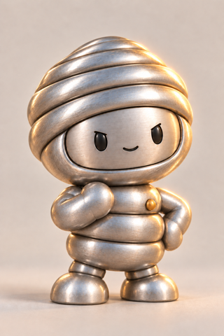
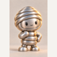
SCM435H r1 원본 보기
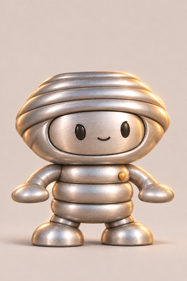
SCM435H r2 원본 보기STEEL COMPANION / TARAE / 2026.11.02
9종 모두 사용자 승인 대기
CHQ·SWRH 2종을 수정하고, 나머지 7종은 r1 원본 그대로 묶었습니다. 이번 자료는 장비 없는 기본형 콘셉트 9종의 형태와 표정을 검토하는 범위입니다.
진행 방향만 승인된 상태입니다. 이 새 그림들의 품질 승인, 장착 모습 승인, 전량 477점 승인과 개발 착수 승인은 아직 아닙니다. 기존 승인 351점·대기 126점은 변경하지 않았습니다.
아래 작은 그림은 확대하지 않은 72×72px 파일입니다. 1024×1536 원본 전체와 배경을 48×72px로 줄이고 좌우에 12px 여백을 넣었습니다. 캐릭터만 잘라 같은 크기로 맞춘 비교나 알파 컷아웃 검증이 아닙니다. 브라우저 확대율 100%에서 확인해 주세요.
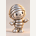
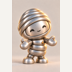
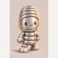
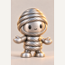
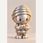
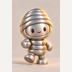
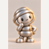
CHQ는 후드가 낮아 원본 안의 세로 점유율도 작습니다. 이 차이를 보정하거나 크롭하지 않았습니다.
낮고 넓게 눌린 후드 · 양손을 낮춰 누르는 자세 · 양발을 딛는 넓은 하체


SCM435H r1 원본 보기
SCM435H r2 원본 보기세로로 긴 후드 · 한 발을 앞으로 딛는 자세 · 낮은 비대칭 팔
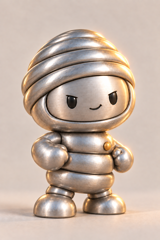
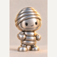
SWRH72A r1 원본 보기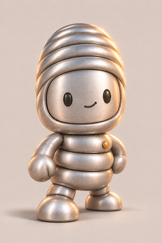
SWRH72A r2 원본 보기그림을 누르면 보관된 전체 원본을 엽니다. 버전 r1 표시는 변경하지 않고 가져온 7종입니다.
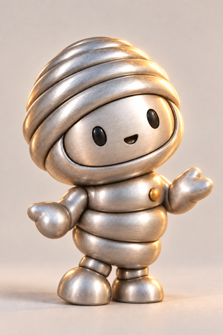
wr-SWRM / 유지 r1 / 승인 대기
아직 뭐가 될지는 나도 몰라. 어디로든 구부러져.
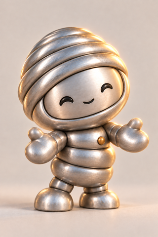
wr-SWRY / 유지 r1 / 승인 대기
내가 녹아야 둘이 붙어. 그게 내 일이야.
wr-SWRH / 수정 r2 / 승인 대기
뽑을수록 세져. 다이를 지날 때마다.
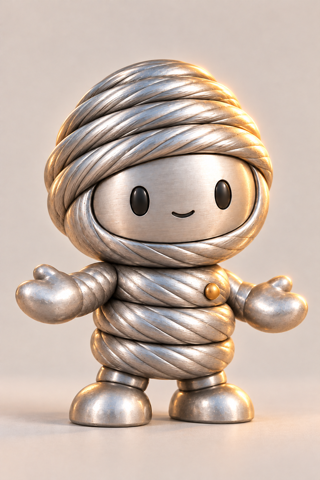
wr-CORD / 유지 r1 / 승인 대기
머리카락보다 가늘게 뽑혀. 그러고도 안 끊어져.
wr-CHQ / 수정 r2 / 승인 대기
머리를 맞아야 볼트가 돼. 속까지 단단해지는 건 그다음이고.
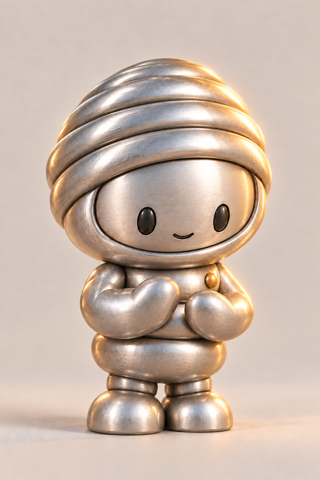
wr-SUJ / 유지 r1 / 승인 대기
티 하나면 끝이야. 그래서 이렇게까지 깨끗해.
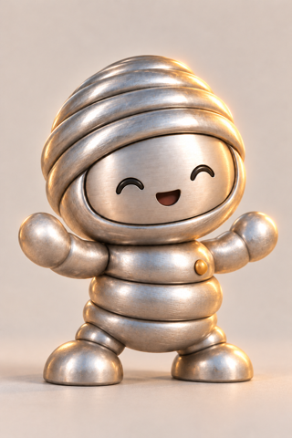
wr-SPR / 유지 r1 / 승인 대기
눌러 봐. 그만큼 돌려줄게.
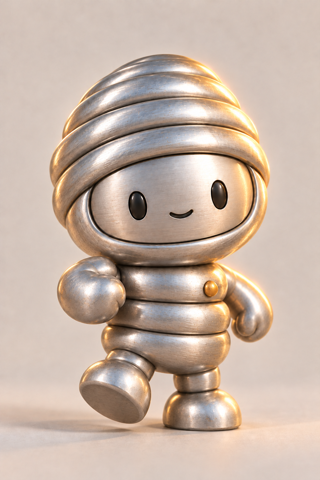
wr-VLV / 유지 r1 / 승인 대기
빠르고 반복적인 움직임을 정확한 박자로 오래 이어가는 집중력.
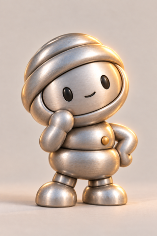
wr-NHT / 유지 r1 / 승인 대기
열처리를 건너뛰어. 공정도 탄소도 같이 줄지.
기준 이미지의 닫힌 코일 후드, 넓은 일체형 얼굴, 짧고 통통한 팔다리, 은색 금속과 작은 황토색 접합점을 유지하는 방향입니다. 새 2종은 내장 image_gen으로 각각 생성했습니다. 원본 바이트와 SHA-256, 전체 프롬프트를 보관했습니다.
이 자료의 모든 이미지에는 불투명 스튜디오 배경이 포함됩니다. 투명 배경 자산·게임용 썸네일·장착 완성 외형으로 인증하지 않았습니다. 기존 SPR·VLV나 옛 WR 원화의 승인도 이 새 9종에 승계하지 않습니다.